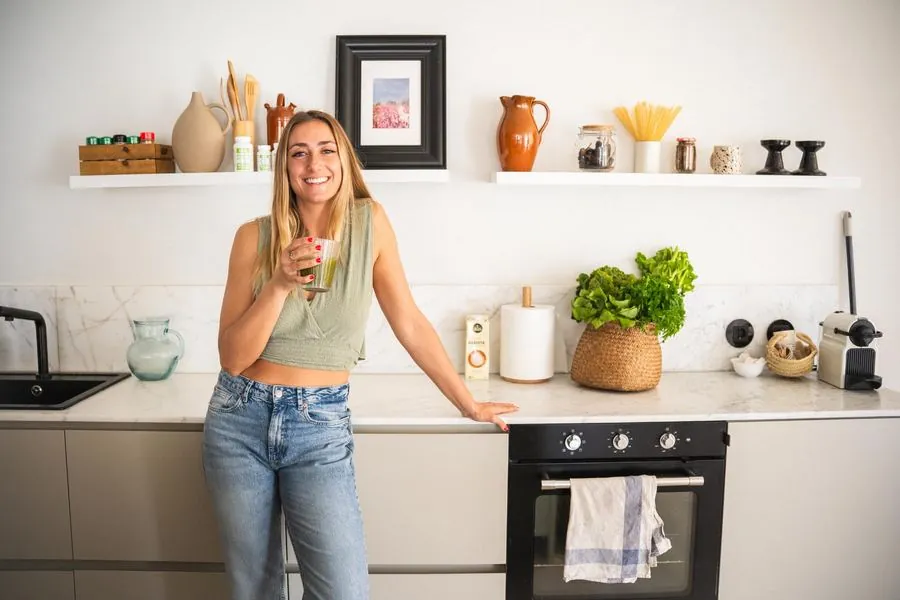
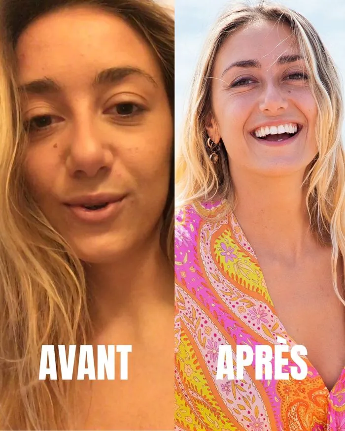
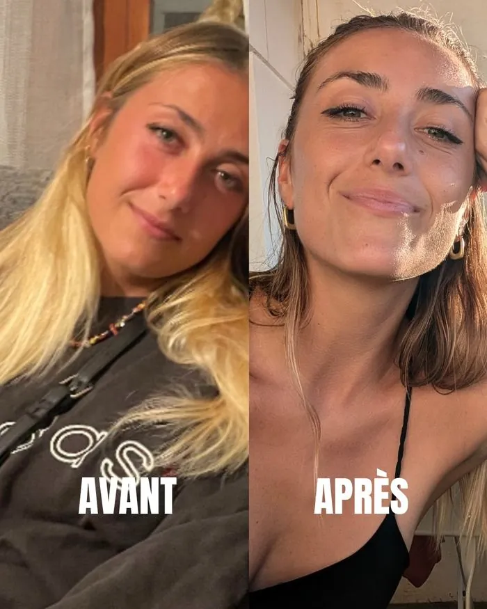
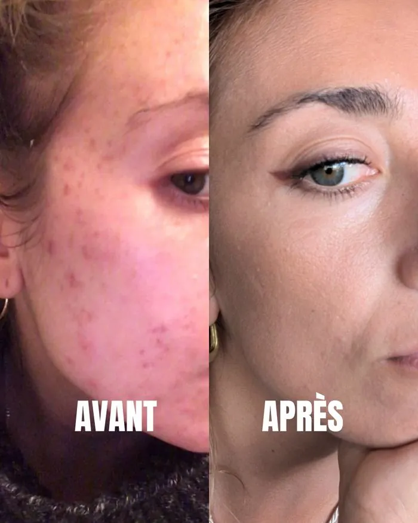
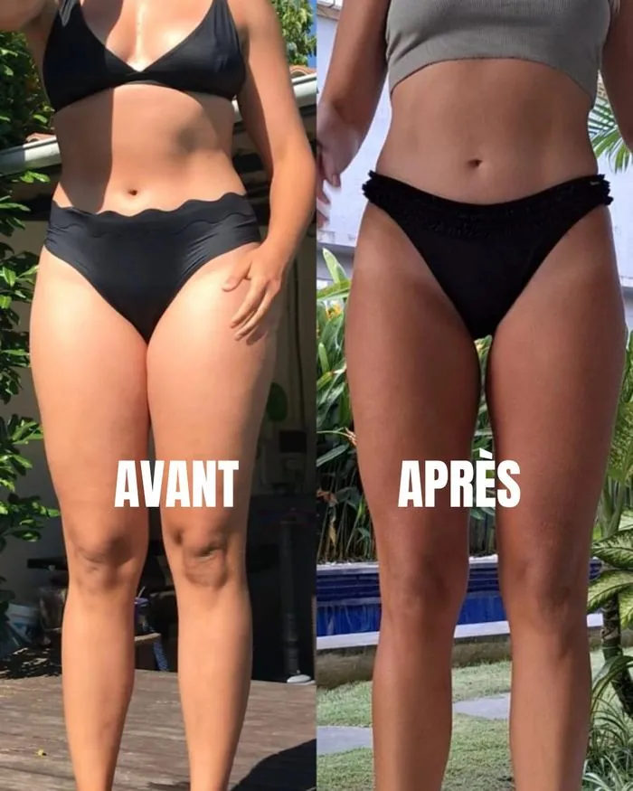
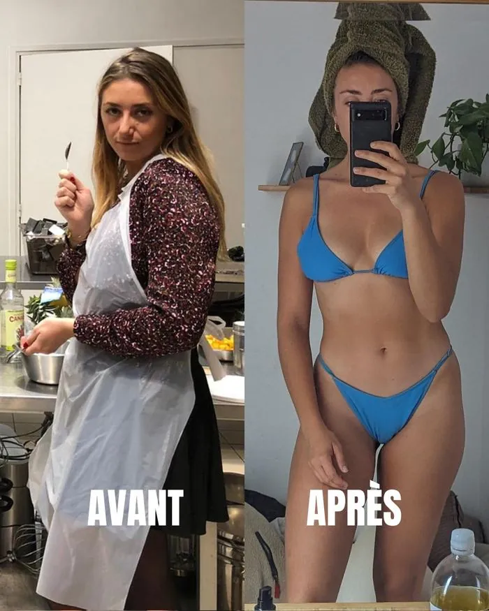

Tu souffres d'un dérèglement hormonal.
Et ça se corrige naturellement.
Je veux que ça changeTémoignage
Ce que tu vis vraiment
Tu manges mieux. Tu bouges. Tu fais des efforts.
Mais ton corps, lui :
"Je fais tout bien. Alors pourquoi je me sens aussi mal ?"
Ce que tu vis c'est ce que vivent des milliers de femmes aujourd'hui. C'est ce qu'on appelle un déséquilibre hormonal. Et ça, ça se corrige naturellement.
Je veux que ça changeTu souffres de l'un de ces symptômes ?
6 semaines pour comprendre ton corps, rééquilibrer tes hormones naturellement, avec des astuces simples et sans culpabilité.
Tu te reconnais ?

— Mon histoire
"Je pensais que finir la journée avec le ventre d'une femme enceinte, me réveiller épuisée après 8h de sommeil, et pleurer sans raison… c'était normal."
J'ai souffert d'acné sévère qui m'a laissé des cicatrices. D'un visage constamment gonflé à cause du cortisol. De cycles de 43 jours puis de règles toutes les deux semaines. De prise de poids inexpliquée avec des pulsions alimentaires dès le matin. De ballonnements constants. D'une déprime profonde.
Puis j'ai compris que tout ça n'était pas dans ma tête. Tout ça avait une cause : mes hormones. Et une solution : les rééquilibrer naturellement.
Comprendre le problème
Humeur, énergie, poids, peau, sommeil, digestion, libido, cycle… Quand une seule hormone déraille, tout le reste suit. C'est pour ça que tu peux "tout faire bien" et continuer à te sentir mal.
Régule humeur, peau, libido. En excès : ballonnements, SPM. En déficit : sécheresse, déprime, cycle irrégulier.
L'hormone de la sérénité. En déficit : anxiété, insomnie, SPM sévère, cycles absents.
Chroniquement élevé : visage gonflé, prise de poids abdominale, fatigue permanente, acné.
Dérégulée : fringales, hypoglycémie, poids résistant, brouillard mental, SOPK.
Ralentie : fatigue extrême, prise de poids, froid, cheveux qui tombent, déprime.
En excès (SOPK) : acné, pilosité. En déficit : fatigue, perte de libido, manque de motivation.
La preuve par les chiffres
Source : questionnaire de début · 155 participantes
— Avant / Après
Ces résultats sont les miens. Obtenus naturellement, sans médicaments, sans régime draconien. En comprenant simplement ce qui se passait dans mon corps.





Même femme. Même vie. Approche différente.
C'est ce que change la compréhension de ses hormones.En 6 semaines
Tu te sens enfin alignée avec ton corps.
La méthode
On identifie et on corrige les 5 blocages hormonaux fondamentaux. Simple, concret, applicable.
Concrètement
Si tu hésites encore
Elles l'ont vécu
"Avant je pensais que manger sainement voulait dire manger moins. Mon corps était épuisé et mes hormones en vrac. J'ai compris comment nourrir mon corps correctement, sans privations."
"Incroyable ! Des résultats fous déjà en l'espace de quelques semaines ! Mary est toujours à l'écoute, bienveillante. Pour retrouver l'énergie, la positivité et l'acceptation de soi, allez-y les yeux fermés !"
"J'ai perdu 6 kilos depuis quelques mois. Je me sens moins gonflée au ventre, une sensation de légèreté dans mon corps. Le plus important, c'est que je me sens mieux dans ma peau."
"Avant, je ne comprenais pas le lien entre mon alimentation et mes symptômes hormonaux. Des ajustements simples ont fait toute la différence. Je n'ai plus cette sensation de lutter contre moi-même."
"Une pépite ce programme. J'ai fait le dernier et mes cycles n'ont jamais été aussi faciles à vivre."
"Pas beaucoup de douleurs pendant mes règles ce mois-ci. Meilleur sommeil et plus d'énergie. J'ai la sensation d'avoir dégonflé."
"Une personne disponible, à l'écoute et tellement bienveillante. Son programme est hyper complet et super bien expliqué. Elle est sincèrement impliquée dans votre guérison. À recommander sans hésiter."
"À 49 ans, je pensais que les bouffées, la prise de poids et la fatigue faisaient partie de la ménopause et qu'il n'y avait rien à faire. Ce programme m'a montré que non. En 6 semaines, j'ai retrouvé une énergie que je n'avais plus depuis des années."
Ce qu'elles disent aussi
"Avant je pensais que manger sainement voulait dire manger moins. Mon corps était épuisé et mes hormones en vrac. J'ai compris comment nourrir mon corps correctement, sans privations."
"Incroyable ! Des résultats fous déjà en l'espace de quelques semaines ! Mary est toujours à l'écoute, bienveillante. Pour retrouver l'énergie, la positivité et l'acceptation de soi, allez-y les yeux fermés !"
"J'ai perdu 6 kilos depuis quelques mois. Je me sens moins gonflée au ventre, une sensation de légèreté dans mon corps. Le plus important, c'est que je me sens mieux dans ma peau."
"Avant, je ne comprenais pas le lien entre mon alimentation et mes symptômes hormonaux. Des ajustements simples ont fait toute la différence. Je n'ai plus cette sensation de lutter contre moi-même."
"Une pépite ce programme. J'ai fait le dernier et mes cycles n'ont jamais été aussi faciles à vivre."
"Pas beaucoup de douleurs pendant mes règles ce mois-ci. Meilleur sommeil et plus d'énergie. J'ai la sensation d'avoir dégonflé."
"Une personne disponible, à l'écoute et tellement bienveillante. Son programme est hyper complet et super bien expliqué. Elle est sincèrement impliquée dans votre guérison. À recommander sans hésiter."
"À 49 ans, je pensais que les bouffées, la prise de poids et la fatigue faisaient partie de la ménopause et qu'il n'y avait rien à faire. Ce programme m'a montré que non. En 6 semaines, j'ai retrouvé une énergie que je n'avais plus depuis des années."
À la fin du programme
Investis en toi
En énergie. En confiance. En temps. En argent. Maintenant tu as le choix. Continuer à chercher. Ou investir une fois, intelligemment, dans un programme qui traite la vraie cause.
TTC · paiement unique · accès à vie
⏳ Prix jusqu'au 28 septembre · puis 600€3 mensualités · soit 660€
⏳ Prix jusqu'au 28 septembre · puis 250€/moisFAQ
Absolument. Si tu te reconnais dans les symptômes, fatigue, ballonnements, cycle instable, émotions qui débordent, tes hormones envoient des signaux. Le programme inclut un quiz hormonal pour t'aider à identifier tes déséquilibres.
10 à 15 minutes par jour suffisent. 100% self-paced, accès à vie. Conçu spécialement pour les femmes actives.
Parce que les programmes que tu as essayés traitaient les symptômes, pas la cause. Celui-ci part de tes hormones, une approche globale et naturelle, personnalisée à ton corps.
Oui. De 25 ans à la postménopause. Les coachings de groupe 2025 incluent une session dédiée.
Non, ça le complète. Des outils naturels pour reprendre le pouvoir sur ta santé, en parallèle de tes soins.
Ton corps fonctionne avec des mécanismes biologiques universels. Quand tu les respectes, il répond. Ce programme a été conçu pour s'adapter à chaque profil hormonal — SOPK, endométriose, hypothyroïdie, ménopause, cortisol élevé. 200 femmes l'ont suivi avec des résultats réels. La vraie question n'est pas "est-ce que ça va marcher" — c'est "est-ce que je suis prête à traiter la vraie cause ?"
Tu as encore une question ?
Une hésitation, une question sur le programme, tu veux savoir si c'est fait pour toi — je suis là.
Écrire à Mary sur WhatsAppRéponse sous 24h
Rayonnante. Vivante. Inarrêtable. C'est exactement ce que disent les femmes qui ont complété le programme.
Je veux que ça changeby Mary, Naturopathe spécialisée en santé féminine